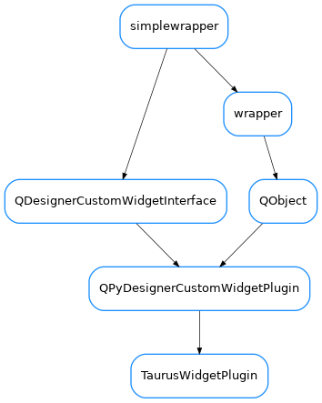

TaurusWidgetPlugin¶

-
class
TaurusWidgetPlugin(parent=None)[source]¶ Bases:
PyQt5.QtDesigner.QPyDesignerCustomWidgetPlugin-
group()[source]¶ Returns the name of the group in Qt Designer’s widget box that this widget belongs to. It returns ‘Taurus Widgets’. Overwrite if want another group.
-
includeFile()[source]¶ Returns the module containing the custom widget class. It may include a module path.
-